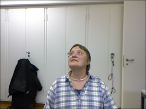
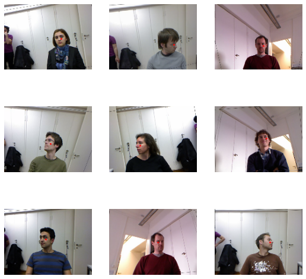
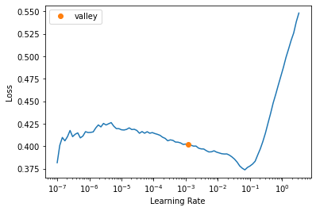
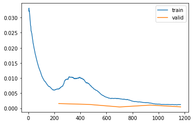
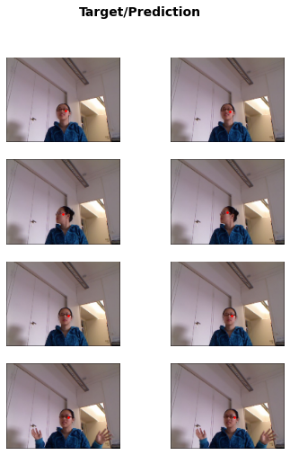

path = untar_data(URLs.BIWI_HEAD_POSE)Image Regression
Biwi Kinect Head Pose dataset
In this project we’ll detect the center of the person’s face in the image. We’ll use the Biwi Kinect Head Pose dataset for this task. The dataset contains images of 24 people and coresponding obj files that won’t be needed. Each image (*_rgb.jpg) is annotated with the center of the person’s face and the pose of the head (_pose.txt*). The pose is defined by the rotation of the head around the three axes.
path.ls()(#50) [Path('/notebooks/fastai/data/biwi_head_pose/03.obj'),Path('/notebooks/fastai/data/biwi_head_pose/06'),Path('/notebooks/fastai/data/biwi_head_pose/21'),Path('/notebooks/fastai/data/biwi_head_pose/16.obj'),Path('/notebooks/fastai/data/biwi_head_pose/08'),Path('/notebooks/fastai/data/biwi_head_pose/19'),Path('/notebooks/fastai/data/biwi_head_pose/15'),Path('/notebooks/fastai/data/biwi_head_pose/02.obj'),Path('/notebooks/fastai/data/biwi_head_pose/15.obj'),Path('/notebooks/fastai/data/biwi_head_pose/04')...]There are total of 15678 images:
img_files = get_image_files(path) # same as L(path.glob('**/*_rgb.jpg')) but get_image_files is not implemented as a glob)
img_files(#15678) [Path('/notebooks/fastai/data/biwi_head_pose/06/frame_00554_rgb.jpg'),Path('/notebooks/fastai/data/biwi_head_pose/06/frame_00069_rgb.jpg'),Path('/notebooks/fastai/data/biwi_head_pose/06/frame_00262_rgb.jpg'),Path('/notebooks/fastai/data/biwi_head_pose/06/frame_00324_rgb.jpg'),Path('/notebooks/fastai/data/biwi_head_pose/06/frame_00093_rgb.jpg'),Path('/notebooks/fastai/data/biwi_head_pose/06/frame_00313_rgb.jpg'),Path('/notebooks/fastai/data/biwi_head_pose/06/frame_00129_rgb.jpg'),Path('/notebooks/fastai/data/biwi_head_pose/06/frame_00187_rgb.jpg'),Path('/notebooks/fastai/data/biwi_head_pose/06/frame_00278_rgb.jpg'),Path('/notebooks/fastai/data/biwi_head_pose/06/frame_00117_rgb.jpg')...]len(list(path.glob('**/*_rgb.jpg')))15678An image look like this:
im_path = (path / '01').ls()[0]
im = PILImage.create(im_path).to_thumb(300) # same as PIL.Image.open
im
to find the annotation for that image we need to look at the corresponding *_pose.txt* file:
def img2pose(x):
return Path(f'{str(x)[:-7]}pose.txt')ff = img2pose(img_files[0])
with open(ff, 'r') as f:
print(f.read())0.969581 -0.0117593 0.244489
-0.0614535 0.955158 0.28965
-0.236931 -0.295864 0.92538
22.4063 138.81 1058.77
The following is the code to extract data from the file, it uses np.genfromtxt:
with open(path / '01' / 'rgb.cal', 'r') as f:
print(f.read())517.679 0 320
0 517.679 240.5
0 0 1
0 0 0 0
0.999947 0.00432361 0.00929419
-0.00446314 0.999877 0.0150443
-0.009228 -0.015085 0.999844
-24.0198 5.8896 -13.2308
640 480
The following is the code to extract data from the file, it uses np.genfromtxt:
cal = np.genfromtxt(path / '01' / 'rgb.cal', skip_footer=6)
def get_ctr(f):
ctr = np.genfromtxt(img2pose(f), skip_header=3)
c1 = ctr[0]*cal[0][0]/ctr[2] + cal[0][2]
c2 = ctr[1]*cal[1][1]/ctr[2] + cal[1][2]
return tensor([c1, c2])img_files[0]Path('/notebooks/fastai/data/biwi_head_pose/06/frame_00554_rgb.jpg')idx = 4
print(img_files[idx])
get_ctr(img_files[idx])/notebooks/fastai/data/biwi_head_pose/06/frame_00093_rgb.jpgtensor([367.3590, 311.6036])We’ll use images from person #15 as a validation dataset:
def splitter(name):
# True if directory name is 15
return name.parent.name=='15'When running with original size it takes ~2.5 minutes per epoch on P5000, which is not super fast. So let’s rescale the images to smaller size like half of both width and height, which is [640, 480] / 4 = [160, 120]:
biwi = DataBlock(
blocks=(ImageBlock, PointBlock),
get_items=get_image_files,
get_y=get_ctr,
splitter=FuncSplitter(splitter),
batch_tfms=[*aug_transforms(size=[120, 160]), Normalize.from_stats(*imagenet_stats)]
)dls = biwi.dataloaders(path)dls.show_batch(nrows=3, ncols=3)
Training
Let’s look at one batch:
xb, yb = dls.one_batch()
xb.shape, yb.shape(torch.Size([64, 3, 120, 160]), torch.Size([64, 1, 2]))Let’s create a Learner. Because we are dealing with the coordinates as targets, we should rescale them to (-1, 1). If y_range is defined then sigmoid is added as a last layer to the model:
learn = vision_learner(dls, resnet18, y_range=(-1,1))/usr/local/lib/python3.9/dist-packages/torchvision/models/_utils.py:208: UserWarning: The parameter 'pretrained' is deprecated since 0.13 and will be removed in 0.15, please use 'weights' instead.
warnings.warn(
/usr/local/lib/python3.9/dist-packages/torchvision/models/_utils.py:223: UserWarning: Arguments other than a weight enum or `None` for 'weights' are deprecated since 0.13 and will be removed in 0.15. The current behavior is equivalent to passing `weights=ResNet18_Weights.IMAGENET1K_V1`. You can also use `weights=ResNet18_Weights.DEFAULT` to get the most up-to-date weights.
warnings.warn(msg)learn.model.state_dict<bound method Module.state_dict of Sequential(
(0): Sequential(
(0): Conv2d(3, 64, kernel_size=(7, 7), stride=(2, 2), padding=(3, 3), bias=False)
(1): BatchNorm2d(64, eps=1e-05, momentum=0.1, affine=True, track_running_stats=True)
(2): ReLU(inplace=True)
(3): MaxPool2d(kernel_size=3, stride=2, padding=1, dilation=1, ceil_mode=False)
(4): Sequential(
(0): BasicBlock(
(conv1): Conv2d(64, 64, kernel_size=(3, 3), stride=(1, 1), padding=(1, 1), bias=False)
(bn1): BatchNorm2d(64, eps=1e-05, momentum=0.1, affine=True, track_running_stats=True)
(relu): ReLU(inplace=True)
(conv2): Conv2d(64, 64, kernel_size=(3, 3), stride=(1, 1), padding=(1, 1), bias=False)
(bn2): BatchNorm2d(64, eps=1e-05, momentum=0.1, affine=True, track_running_stats=True)
)
(1): BasicBlock(
(conv1): Conv2d(64, 64, kernel_size=(3, 3), stride=(1, 1), padding=(1, 1), bias=False)
(bn1): BatchNorm2d(64, eps=1e-05, momentum=0.1, affine=True, track_running_stats=True)
(relu): ReLU(inplace=True)
(conv2): Conv2d(64, 64, kernel_size=(3, 3), stride=(1, 1), padding=(1, 1), bias=False)
(bn2): BatchNorm2d(64, eps=1e-05, momentum=0.1, affine=True, track_running_stats=True)
)
)
(5): Sequential(
(0): BasicBlock(
(conv1): Conv2d(64, 128, kernel_size=(3, 3), stride=(2, 2), padding=(1, 1), bias=False)
(bn1): BatchNorm2d(128, eps=1e-05, momentum=0.1, affine=True, track_running_stats=True)
(relu): ReLU(inplace=True)
(conv2): Conv2d(128, 128, kernel_size=(3, 3), stride=(1, 1), padding=(1, 1), bias=False)
(bn2): BatchNorm2d(128, eps=1e-05, momentum=0.1, affine=True, track_running_stats=True)
(downsample): Sequential(
(0): Conv2d(64, 128, kernel_size=(1, 1), stride=(2, 2), bias=False)
(1): BatchNorm2d(128, eps=1e-05, momentum=0.1, affine=True, track_running_stats=True)
)
)
(1): BasicBlock(
(conv1): Conv2d(128, 128, kernel_size=(3, 3), stride=(1, 1), padding=(1, 1), bias=False)
(bn1): BatchNorm2d(128, eps=1e-05, momentum=0.1, affine=True, track_running_stats=True)
(relu): ReLU(inplace=True)
(conv2): Conv2d(128, 128, kernel_size=(3, 3), stride=(1, 1), padding=(1, 1), bias=False)
(bn2): BatchNorm2d(128, eps=1e-05, momentum=0.1, affine=True, track_running_stats=True)
)
)
(6): Sequential(
(0): BasicBlock(
(conv1): Conv2d(128, 256, kernel_size=(3, 3), stride=(2, 2), padding=(1, 1), bias=False)
(bn1): BatchNorm2d(256, eps=1e-05, momentum=0.1, affine=True, track_running_stats=True)
(relu): ReLU(inplace=True)
(conv2): Conv2d(256, 256, kernel_size=(3, 3), stride=(1, 1), padding=(1, 1), bias=False)
(bn2): BatchNorm2d(256, eps=1e-05, momentum=0.1, affine=True, track_running_stats=True)
(downsample): Sequential(
(0): Conv2d(128, 256, kernel_size=(1, 1), stride=(2, 2), bias=False)
(1): BatchNorm2d(256, eps=1e-05, momentum=0.1, affine=True, track_running_stats=True)
)
)
(1): BasicBlock(
(conv1): Conv2d(256, 256, kernel_size=(3, 3), stride=(1, 1), padding=(1, 1), bias=False)
(bn1): BatchNorm2d(256, eps=1e-05, momentum=0.1, affine=True, track_running_stats=True)
(relu): ReLU(inplace=True)
(conv2): Conv2d(256, 256, kernel_size=(3, 3), stride=(1, 1), padding=(1, 1), bias=False)
(bn2): BatchNorm2d(256, eps=1e-05, momentum=0.1, affine=True, track_running_stats=True)
)
)
(7): Sequential(
(0): BasicBlock(
(conv1): Conv2d(256, 512, kernel_size=(3, 3), stride=(2, 2), padding=(1, 1), bias=False)
(bn1): BatchNorm2d(512, eps=1e-05, momentum=0.1, affine=True, track_running_stats=True)
(relu): ReLU(inplace=True)
(conv2): Conv2d(512, 512, kernel_size=(3, 3), stride=(1, 1), padding=(1, 1), bias=False)
(bn2): BatchNorm2d(512, eps=1e-05, momentum=0.1, affine=True, track_running_stats=True)
(downsample): Sequential(
(0): Conv2d(256, 512, kernel_size=(1, 1), stride=(2, 2), bias=False)
(1): BatchNorm2d(512, eps=1e-05, momentum=0.1, affine=True, track_running_stats=True)
)
)
(1): BasicBlock(
(conv1): Conv2d(512, 512, kernel_size=(3, 3), stride=(1, 1), padding=(1, 1), bias=False)
(bn1): BatchNorm2d(512, eps=1e-05, momentum=0.1, affine=True, track_running_stats=True)
(relu): ReLU(inplace=True)
(conv2): Conv2d(512, 512, kernel_size=(3, 3), stride=(1, 1), padding=(1, 1), bias=False)
(bn2): BatchNorm2d(512, eps=1e-05, momentum=0.1, affine=True, track_running_stats=True)
)
)
)
(1): Sequential(
(0): AdaptiveConcatPool2d(
(ap): AdaptiveAvgPool2d(output_size=1)
(mp): AdaptiveMaxPool2d(output_size=1)
)
(1): fastai.layers.Flatten(full=False)
(2): BatchNorm1d(1024, eps=1e-05, momentum=0.1, affine=True, track_running_stats=True)
(3): Dropout(p=0.25, inplace=False)
(4): Linear(in_features=1024, out_features=512, bias=False)
(5): ReLU(inplace=True)
(6): BatchNorm1d(512, eps=1e-05, momentum=0.1, affine=True, track_running_stats=True)
(7): Dropout(p=0.5, inplace=False)
(8): Linear(in_features=512, out_features=2, bias=False)
(9): fastai.layers.SigmoidRange(low=-1, high=1)
)
)>Yup, there it is as a last layer.
FastAI decided on a loss function:
dls.loss_funcFlattenedLoss of MSELoss()this makes sense, we are looking for L2 distance from the target.
Let’s take a look at learning rate finder:
learn.lr_find()SuggestedLRs(valley=0.0012022644514217973)
Let’s train:
learn.fine_tune(5, base_lr=1e-2)
0.00% [0/5 00:00<?]
| epoch | train_loss | valid_loss | time |
|---|
0.00% [0/234 00:00<?]
learn.recorder.plot_loss()
Show predictions on a validation dataset (ds_idx=1, i.e. the validation dataset):
learn.show_results(ds_idx=1, max_n=4, figsize=(6,8))
learn.final_record(#1) [0.00045044912258163095]The error or 0.00039 is a mean square error, and y_range was (-1, 1) due to sigmoid, where -1 and 1 are the edges of the image (we can’t predict outside the images), so this means the corresponds average distance is:
math.sqrt(0.00039)0.019748417658131498This corresponds to an average being 1.5 pixels off from the target (2 is the iamge width : 0.019 = 160 pixels : x):
0.019*160/21.52Inference
Let’s try to evaluate new images. We need to load RGB images, apparently learn.predict applies the same transformation as in DataLoaders. It even returns original image if needed (good post for more info):
im_list = []
for i in [1,3,4]:
im_path = f'/notebooks/nbs/mini-projects/15_head_pose/Photo{i}.jpg'
im_orig, pred, _, _ = learn.predict(im_path, with_input=True)
point = (pred[0]).detach().cpu().numpy() # convert predictions to coordinates
im = ToPILImage()(im_orig/255)
draw = ImageDraw.Draw(im)
d = 2
draw.ellipse((point[0] - d, point[1] - d, point[0] + d, point[1] +d), fill='red')
im_list.append(im)
_ = plot_pil_images(im_list)
And this is pretty good, even if the head is shifted left and right with respect to the image center.